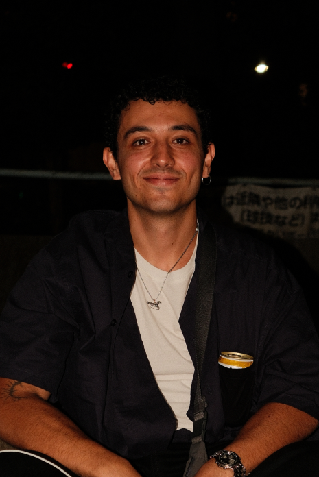

explore
visual gastronomic diary
Japan 2026
Manifest
¿Por qué LesCookz?
En el primer borrador, hablaba del miedo a que este proyecto pudiera parecer presuntuoso. Sin darme cuenta, acabé escribiendo como cuando tenía que presentar un ensayo en la universidad: utilizando el lenguaje más enrevesado y denso posible, casi como una forma de justificarme y protegerme de ese miedo.
Es curioso, porque es precisamente lo contrario de lo que quiero transmitir con este proyecto. Supongo que ese miedo a mostrarme un poco más como soy, a dejar ver algo de mí sin saber cómo será juzgado, tiene mucho que ver con una de las ideas que hay detrás de LesCookz: no tener miedo de ser humano.
Mi intención con esto es transmitir, mínimamente y a través de la creación de universos visuales temáticos, cómo me gusta la cocina y cómo me gusta el ser humano cuando, de múltiples formas, está alrededor de ella. Porque no soy cocinero, pero me habría encantado serlo y, visto desde el otro lado, tampoco está tan mal.
Digo desde el otro lado porque, durante mi estancia en Japón, lo que más me atrajo y me facilitó la recopilación de información, las charlas, las fotografías y la observación directa, tanto de cocineros como de clientes, fueron las barras abiertas frente a la cocina. Una distribución física que posibilita una relación humana más cercana y menos deshumanizada que la que parece promover un sector cada vez más acostumbrado a las tablets y pantallas a través de las que pedir comida sin intercambiar una sola palabra con nadie.
LesCookz nace justamente de lo humano dentro de la cocina y de perder el miedo a hablar con otra persona. Entristece sentir que, a menudo, y yo soy el primero que lo hace, nuestro compañero de comida acaba siendo ese vídeo de YouTube que llevas cinco minutos buscando o el capítulo de la serie que sea de Amazon Prime. Y es que la cocina y la comida son, para mí, de las acciones más cálidas que tiene el ser humano consigo mismo y con quienes le rodean.
¿Por qué cuando comes con amigos recalcas lo bueno que está tu plato, das a probar y te dejas probar, mientras que cuando estás solo no piensas ni la mitad de veces en darle valor a lo que estás comiendo? Incluso cuando son platos que has comido mil veces en casa, has normalizado lo bueno que son y no te das cuenta de lo que tienes hasta que dejas de tenerlo.
Por eso creo que empecé a construir esto: para no olvidarme de darle valor al aspecto humano de cada comida que como, de ser consciente de lo que estoy haciendo y de evitar ir en modo automático, al menos en algo que realmente amo, como es la cocina y todo lo que la rodea.
Porque la gente que está alrededor de una mesa no es hostil. Durante mi estancia en Japón, el simple hecho de compartir un espacio alrededor de la comida facilitó enormemente la comunicación con otras personas, incluso sin tener un idioma común. Porque si le preguntas a cualquier persona «¿qué te gusta comer?», casi cualquiera, sea introvertida o extrovertida, puede responderte al menos una cosa que le llene. Y a través de esa respuesta ya tienes una nueva conversación con alguien a quien hace un minuto ni siquiera conocías.
Por último, tengo que agradecer a todas las personas con las que me crucé por Japón, porque su calidez ha sido realmente uno de los motores para hacer esto. En la libreta les pedía que apuntaran sus nombres y, si les parecía bien, hacerles un retrato para un fotolibro. Pero mi intención ha cambiado. Simplemente quiero compartir sus fotografías, sin sus nombres, porque creo que realmente merecería la pena que algún día pudieseis visitar esos lugares y conocerlos vosotros mismos.

Konbini
STATS
VITAMIN C1000ビタミンC1000